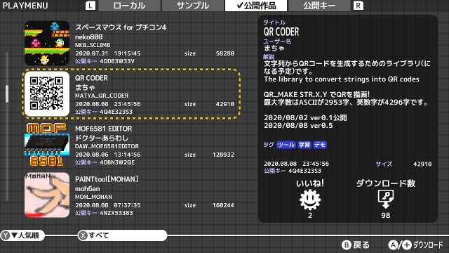
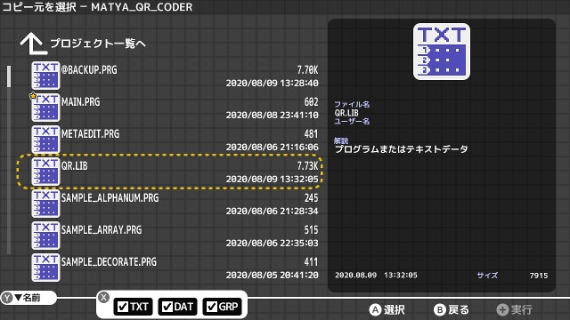
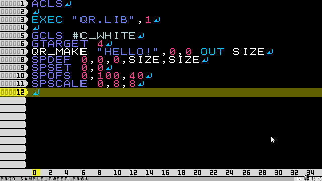
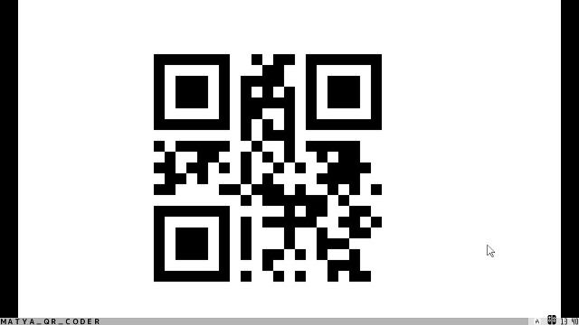

トップ>プチコン作品一覧>QR CODER
QRでURLを貼り、自分のSNSアカウントやブログを宣伝しましょう！
QRをグラフィック画面に描画したり、QRをSLOTに書き出したり、SLOTの内容をQRに変換したり、色々な使い方ができます。
QRを使ったゲームも作れそう、、、？
各命令の詳しい仕様はリファレンスを確認してください。
「使い方がわからない」「機能を追加してほしい」等、質問・要望があればtwitterまで。
※「プチコン」は株式会社スマイルブームの登録商標です。
※「QRコード」はデンソーウェーブの登録商標です。
QR CODER ver0.6.1
公開キー:4Q4E323S3
概要
QR CODERはプチコン4でQRコードを生成するためのライブラリです。QRでURLを貼り、自分のSNSアカウントやブログを宣伝しましょう！
QRをグラフィック画面に描画したり、QRをSLOTに書き出したり、SLOTの内容をQRに変換したり、色々な使い方ができます。
QRを使ったゲームも作れそう、、、？


導入方法
STEP1:プチコン4でQR CODERをダウンロード！

STEP2:QR CODERのプロジェクトから"QR.LIB"をコピー！

STEP3:EXECで"QR.LIB"を読み込み！

STEP4:QR_MAKE "文字列",X,Yで描画！

各命令の詳しい仕様はリファレンスを確認してください。
「使い方がわからない」「機能を追加してほしい」等、質問・要望があればtwitterまで。
※「プチコン」は株式会社スマイルブームの登録商標です。
※「QRコード」はデンソーウェーブの登録商標です。